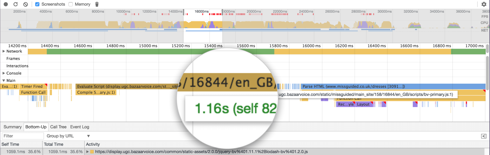
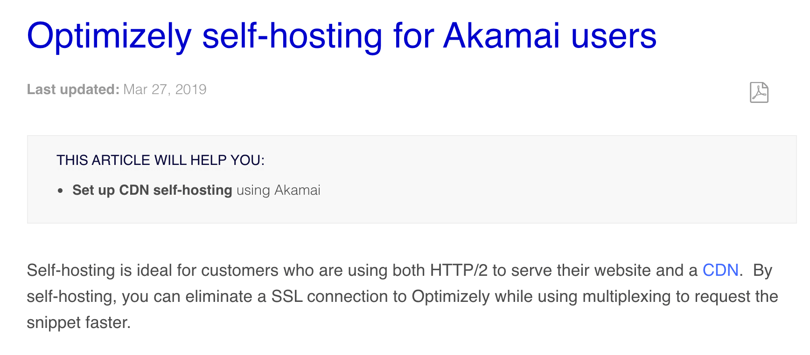

@SimonHearne
Third-party Content
a deep dive
Simon Hearne
Web Performance Solutions Engineer @ Akamai
Third-parties?
Content served from a domain outside of your control
- Analytics
- Advertising
- Optimisation
- JS CDNs
- Tag Management
- ...
The median website is
37%
third-party requests
Source: HTTP Archive 2019-10-01
Sometimes it feels like we're getting nowhere
It can feel like 'us vs them'
everyone who works on a web product
shares ownership of performance and security
(whether they know it or not)
Another tracking script?!
Regulations are increasing visibility
Tag managers are enablers
Fancy a super power?
Incident 1: the 30s wait
Launched in China üá®üá≥
- üëç localisation
- üëç dev testing
- üëç QA in China
The problem
index.html
style.css
image1.jpg
image2.jpg
font.woff2
script.js
social.js
image3.jpg
image4.jpg
doc.ready()
fb.js
doc.ready()
important!
Don't worry, it's async!
sync is still king(!)
Source: HTTP Archive. 2016-05-15 to 2019-10-01
The defense üëÆ‚Äç‚ôÄÔ∏è
- üá®üá≥ feature flag
- don't block on onload
<script defer >
Beware your script loading strategy
Tag managers allow for this
Load scripts as late as possible
Tag loading times (a rough guide)
Immediate ⚡️
- Experimentation
- Tag Manager
Fast üëÄ
- Session Tracking
- Performance Monitoring
Late üêå
- Ads(!)
- Reviews & Ratings
- Live Chat & Support
Incident 2: the missing revenue
The problem
Conversion rate down 30% overnight üìâ
The discovery
<script async src="//thirdparty.com/embed.js">
The discovery
Subresource Integrity
Only execute code if it matches the hash
<script
src="//thirdparty.com/embed.js"
integrity="sha256-ivk71nXhz9nsyFDoYoGf2...="
crossorigin="anonymous">
Currently used on 5.15% of pages
(HTTP Archive - 2019/10/01)
Back to <img> pixels?
<script>!function(f,b,e,v,n,t,s){...}();</script>
<noscript>
<img height="1" width="1" style="display:none"
src="https://www.facebook.com/tr?id=...&noscript=1"
/>
</noscript>
Incident 3: the "performance" tool
The problem
The site feels "laggy"
üßê
The problem
clicked!
instant
500ms delay
The discovery

The discovery
The defense
- Don't rely on synthetic tests
- Track unload duration
- Track everything!
If it moves, we track it. Sometimes we’ll draw a graph of something that isn’t moving yet, just in case it decides to make a run for it.
Incident 4: the review provider
The problem
The discovery
The defense
26%
more revenue
The defense
- Adaptive tag loading
- Understand the impact
- Communicate with 3rd parties
Incident 5: the malicious ads
The problem
The discovery
Content Security Policy
content-security-policy: default-src *;
script-src 'self' 'unsafe-inline' 'unsafe-eval' *.go-mpulse.net maps.googleapis.com;
object-src *;
style-src 'self' 'unsafe-inline' fonts.googleapis.com;
img-src 'self' data: img.youtube.com *.akstat.io *.gstatic.com *.googleapis.com *.google-analytics.com *.ytimg.com;
media-src 'self';
frame-src 'self' *.youtube-nocookie.com;
font-src 'self' *.gstatic.com data:;
connect-src 'self' *.akstat.io *.go-mpulse.net *.google-analytics.com;
report-uri https://akstat.io/report/<api-key>
Currently used on 6.11% of pages
(HTTP Archive - 2019/10/01)
Content Security Policy
| CSP Directive | HTML / JS Features |
|---|---|
| default-src | * |
| connect-src | XMLHttpRequest(), WebSocket(), EventSource(), sendBeacon(), fetch() |
| style-src | <link rel="stylesheet"> |
| script-src | <script> |
| form-action | <form> |
| font-src | @font-face |
| child-src | <iframe>, Worker() |
| object-src | <object>, <embed> |
| media-src | <video>, <audio> |
| img-src | <img> |
| manifest-src | <link rel="manifest"> |
Incident 6: the crypto miner
The problem
The discovery
Many compromised services...
CryptoMiner Use
Source: HTTP Archive. 2017-09-15 to 2019-10-01
Static analysis is not enough
The defense
- Subresource Integrity
- Content-Security-Policy (connect-src)
- Track CPU metrics (TTI / CPU Idle)
Incident 7: the "optimisation"
Our goal is not to make a fast website,
it is to maximise business success.
What's 500ms worth?
Proxy through your domain
Evaluate performance

Use the platform
Introducing Performance Edge: Making Web Experiments Run Blazingly Fast
What can we learn?
Everything should have a value
because everything has a cost
Tim Kadlec
Visibility is Key
- WebPageTest & RequestMap
- CSP Reports
- Resource Timing in RUM
Determine the risk & value
- WebPageTest Block & SPoF
- RUM Correlations
- Webbkoll by Dataskydd
Remove the unnecessary
- Ownership & ROI
- Adaptive Loading
- Server-side equivalents
Immunise against the necessary
- Proxy through your CDN
- Content-Security-Policy
- Subresource Integrity
- Minimise Customisation
Lock it down!
- Lock down tag manager
- Business process for tags